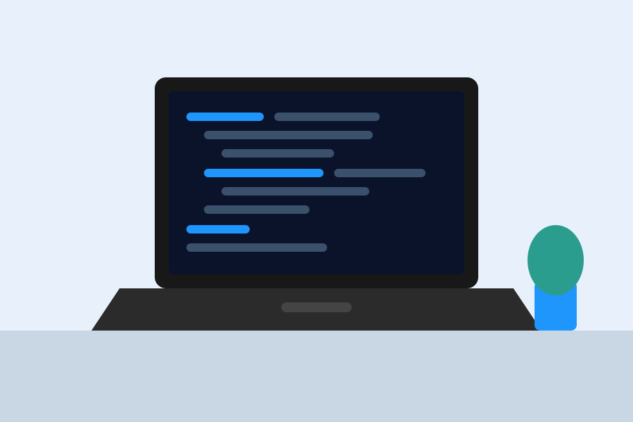
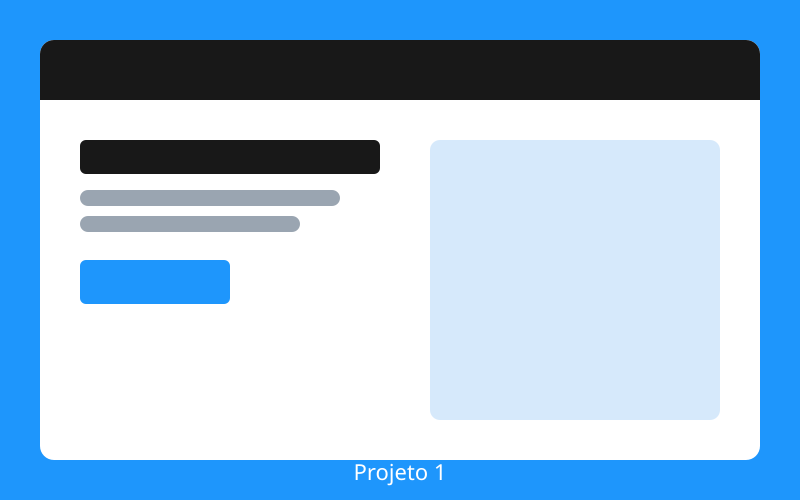
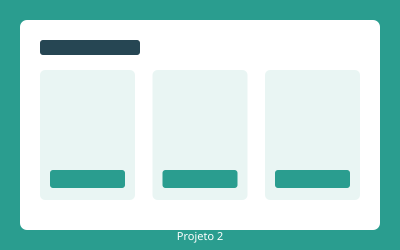
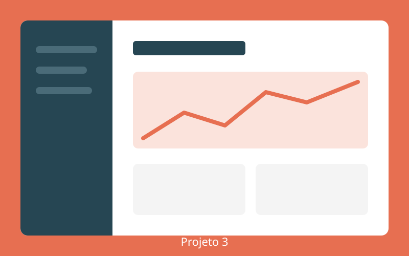

CódigoIAgil · desenvolvimento ágil com IA
Olá,
Seja bem-vindo
Crie soluções para o seu negócio: código pensado, conectado e entregue por Inteligência Artificial.
Veja meus projetos 👇Sobre
Antes de escrever código com IA, passei anos do outro lado: fazendo o código dos outros rodar em produção, com segurança.
Venho da infraestrutura. Administro sistemas e middleware, servidores de aplicação como o JBoss, proxies Nginx, contêineres Docker e clusters Kubernetes. É o lado que recebe a aplicação "pronta" e descobre, na hora mais difícil, o que ninguém testou.
Por isso segurança e compliance nunca foram etapa final para mim: são requisito desde a primeira linha. E o que é repetitivo eu automatizo com Ansible, Shell Script e PowerShell, porque processo manual é onde o erro se esconde.
Hoje uso a IA para acelerar, não para pular etapas. Criei o ATESTO, um método em que a IA executa, mas nada chega à produção sem evidência: lint, varredura de segredos e validação independente em CI. Este site foi publicado exatamente assim.
- Segurança
- Compliance
- Middleware
- Kubernetes
- Docker
- JBoss
- Nginx
- Automação

Do pensamento ao código
A ideia por trás da marca CódigoIAgil, em três passos.
-
Pensar
O cérebro entende o problema e desenha a solução antes da primeira linha de código.
-
Conectar
A IA liga os neurônios: ideias, referências e padrões se conectam e aceleram cada decisão.
-
Codar
O código pensado chega pronto para revisar, testar e publicar com segurança.
Meus projetos
Conheça meus últimos projetos


